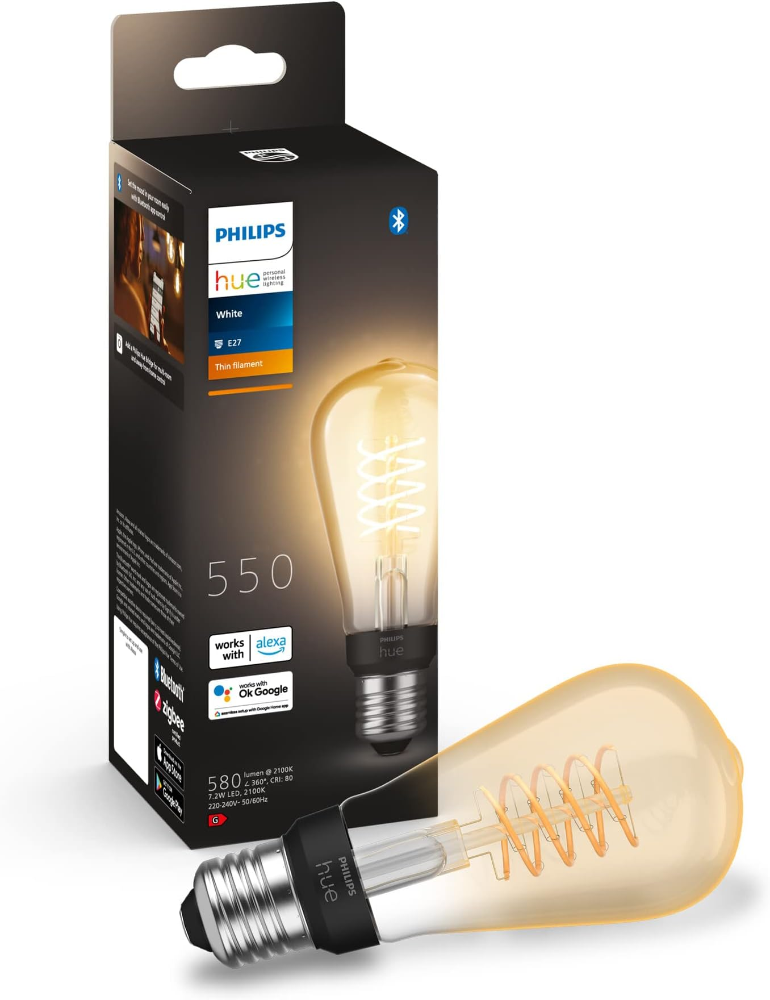

Slimme lampen zijn vaak praktisch, maar niet altijd mooi om te zien. De Philips Hue ST64 Edison probeert precies dat gat te dichten: een lamp die decoratief genoeg is voor een open fitting of zichtbare hanglamp, maar ondertussen gewoon meedoet in je slimme woning.
Wij hebben deze lampen zelf in huis en juist daardoor valt op waar de meerwaarde zit. Ze geven een prettige uitstraling, de verschillende wittinten maken ze bruikbaarder dan veel gewone filamentlampen en de bediening via de Hue app werkt soepel. Ook de samenwerking met Google Home en Homey maakt ze aantrekkelijk als je verlichting onderdeel is van een groter smart-home geheel.
Eindoordeel
Sterke combinatie van design, slimme bediening en brede inzetbaarheid, vooral voor wie sfeerlicht niet wil laten botsen met automatisering.
Bekijk actuele prijs en beschikbaarheid
Dit zijn passende links bij het product uit deze review.
Wat is het?
De Philips Hue ST64 Edison is een slimme E27 filamentlamp in Edison-vorm. Volgens de productinformatie gaat het om een directe dimbare Hue-lamp met vintage uitstraling, geschikt voor Bluetooth en met extra mogelijkheden via een Hue Bridge.
- Fitting → E27, dus geschikt voor veel hanglampen, tafellampen en open armaturen.
- Lichttype → White ambiance / White, met zachtwit licht en filament-uitstraling.
Het is daarmee geen gewone decoratielamp die alleen mooi staat, maar een slimme lamp die sfeerverlichting koppelt aan bediening via app, stem en automatiseringen.
Eerste indruk en gebruikservaring
Wat meteen opvalt, is dat deze lamp vooral bedoeld is om gezien te worden. In een dichte kap zou je veel van het karakter verliezen, maar in een open armatuur of losse fitting komt hij juist goed tot zijn recht. In gebruik voelt hij als een volwaardige Hue-lamp: de app reageert prettig, scènes zijn snel ingesteld en de lamp laat zich netjes opnemen in een bestaande slimme verlichtingsopstelling. Het feit dat je niet vastzit aan één wittoon maakt hem ook bruikbaarder dan veel decoratieve filamentlampen die vooral op uitstraling leunen.

Pluspunten
- Mooie vintage uitstraling die juist in zichtbare armaturen goed werkt.
- Verschillende wittinten maken de lamp breder inzetbaar dan een standaard decoratieve filamentlamp.
- De Hue app werkt prettig voor dimmen, scènes en automatiseringen.
- Werkt in de praktijk goed samen met zowel Google Home als Homey.
Minpunten
- De meerwaarde zit sterk in het zichtbare design, dus in gesloten armaturen komt hij minder tot zijn recht.
- Voor puur functionele verlichting zijn er goedkopere en minder uitgesproken alternatieven denkbaar.
- Wie alleen een eenvoudige lamp zoekt zonder app, stem of automatisering benut het slimme deel nauwelijks.
- Voor extra mogelijkheden is een Hue Bridge volgens de productinformatie nog steeds relevant.
Integratie en compatibiliteit
Volgens de productinformatie is de lamp geschikt voor Bluetooth en krijg je met een Hue Bridge meer mogelijkheden. In de praktijk werkt hij daarnaast prima in een smart-home omgeving met Google Home en Homey. Daardoor kun je hem niet alleen handmatig bedienen, maar ook opnemen in scènes, routines en automatiseringen.
- Hue app voor directe bediening, dimmen en automatiseringen.
- Google Home voor spraakbediening en opname in routines.
- Homey voor koppeling met bredere flows en slimme scènes in huis.
Voor wie is dit een goede keuze?
Deze lamp is een goede keuze voor mensen die slimme verlichting zichtbaar onderdeel van hun interieur willen maken. Denk aan boven een eettafel, in een open wandlamp, naast het bed of in een armatuur waar de lamp zelf gezien mag worden. Ook als je al werkt met Hue, Google Home of Homey sluit deze ST64 Edison daar logisch op aan.
Voor wie juist niet?
Zoek je vooral een goedkope, onopvallende lamp voor algemene basisverlichting, dan is dit waarschijnlijk niet de meest logische keuze. Ook in armaturen waar de lamp volledig uit het zicht zit, betaal je in feite voor een uitstraling die je nauwelijks terugziet.
Aandachtspunten
- Controleer of je armatuur geschikt is voor een E27-lamp in Edison-vorm.
- Deze lamp komt het best tot zijn recht in een open of halfopen armatuur.
- Wil je het maximale uit scènes en automatiseringen halen, dan past hij het best in een bestaande Hue- of smart-home setup.
Conclusie
De Philips Hue ST64 Edison E27 is een geslaagde slimme filamentlamp voor wie uitstraling en functionaliteit wil combineren. De lamp ziet er mooi uit, biedt verschillende wittinten en laat zich prettig bedienen via de Hue app. Dat hij daarnaast ook goed samenwerkt met Google Home en Homey maakt hem extra interessant voor wie al bezig is met een slim huis. Niet de meest logische keuze voor puur functioneel licht, maar wel een sterke optie als je slimme verlichting ook echt onderdeel van je interieur wilt maken.